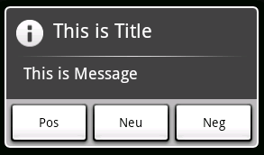

AlertDialog

- AlertDialog实例的生成，
- 生成AlertDialog.Builder类的实例，并且设置属性。
- 调用AlertDialog.Builder.create()方法，生成AlertDialog的实例。
- AlertDialog的表示，调用AlertDialog.show()方法。
- AlertDialog标题的设置，调用AlertDialog.Builder.setTitle()方法。
- AlertDialog消息的设置，调用AlertDialog.Builder.setMessage()方法。
- AlertDialog按钮点击处理的追加，调用AlertDialog.Builder.setTitle()方法。
- 调用AlertDialog.Builder类的setPositiveButton()、setNeutralButton()、 setNegativeButton()方法，把DialogInterface.OnClickListener实例作为参数传递过去
- AlertDialog取消按钮的设置，调用AlertDialog.Builder.setCancelable()方法。
例程源码(Java)
final AlertDialog.Builder alertDialogBuilder = new AlertDialog.Builder(this);
alertDialogBuilder.setTitle("This is Title");
alertDialogBuilder.setMessage("This is Message");
alertDialogBuilder.setPositiveButton("Pos", new DialogInterface.OnClickListener() {
@Override
public void onClick(DialogInterface dialog, int which) {
Log.v("Test", Integer.toString(which));
}
});
alertDialogBuilder.setNeutralButton("Neu", new DialogInterface.OnClickListener() {
@Override
public void onClick(DialogInterface dialog, int which) {
Log.v("Test", Integer.toString(which));
}
});
alertDialogBuilder.setNegativeButton("Neg", new DialogInterface.OnClickListener() {
@Override
public void onClick(DialogInterface dialog, int which) {
Log.v("Test", Integer.toString(which));
}
});
alertDialogBuilder.setCancelable(true);
final AlertDialog alertDialog = alertDialogBuilder.create();
alertDialog.show();